Из чего делают монеты ?

Первые монеты чеканились в Греции и Малой Азии из серебра и электра, а в Китае отливались из меди. В дальнейшем применялись главным образом серебро, золото, медь, а также различные сплавы – бронза, латунь, билон. В новое время к ним присоединились никель, алюминий и др. Реже применяются железо, свинец и прочие металлы. При использовании благородного металла к нему обычно добавляется для прочности некоторое количество меди. Эта примесь называется лигатурой, а процент благородного металла в монете – пробой.
Металлы
Платина (Pt)
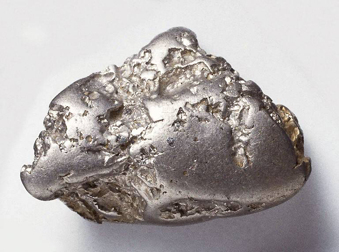
Первые в мире платиновые монеты были выпущены и находились в обращении в Российской империи с 1828 по 1845 год. Чеканка началась с трехрублевиков. В 1829 г. «были учреждены платиновые дуплоны» (шестирублевики), а в 1830 г. «квадрупли» (двенадцати-рублевики). В 1846 г. чеканка платиновой монеты была прекращена. В настоящее время платиновые монеты являются инвестиционными монетами.
Золото (Au)
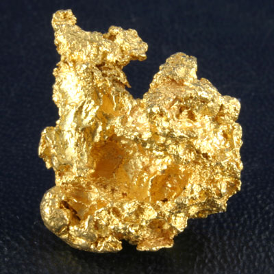
Золото было использовано для производства монет практически с момента изобретения монеты (первоначально из-за собственной ценности золота). С 50-х годов XX века, большинство золотых монет предназначены либо для продажи коллекционерам, либо для продажи частным тезавраторам (накопителям сокровищ в виде золотых монет и слитков), для использования в качестве монет-слитков — монет, номинальное значение которого не имеет никакого значения, и которые служат, в первую очередь, как способ инвестирования в золото. Возможно наиболее идеальный металл для монет, поскольку это мягкий и химически инертный металл. Из-за мягкости в настоящее время почти всегда используется в сплаве с медью.
Серебро (Ag)
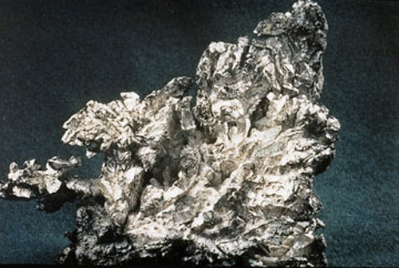
Мягкий металл, очень стоек к воздействию воздуха и воды, однако весьма чувствителен к сере и сернистым соединениям. Используется для чеканки монет с 6 в. до н.э. В настоящее время, как правило, из серебра чеканятся памятные и юбилейные монеты. Для придания металлу прочности используется обычно не чистое серебро, а его сплав с медью или цинком. Содержание серебра в сплаве назвается пробой и обозначается лотах, гранах и промиллях. Основными используемыми в современной чеканке монет пробами являются 500, 625, 800 и 925 промиллей.
Медь (Cu)
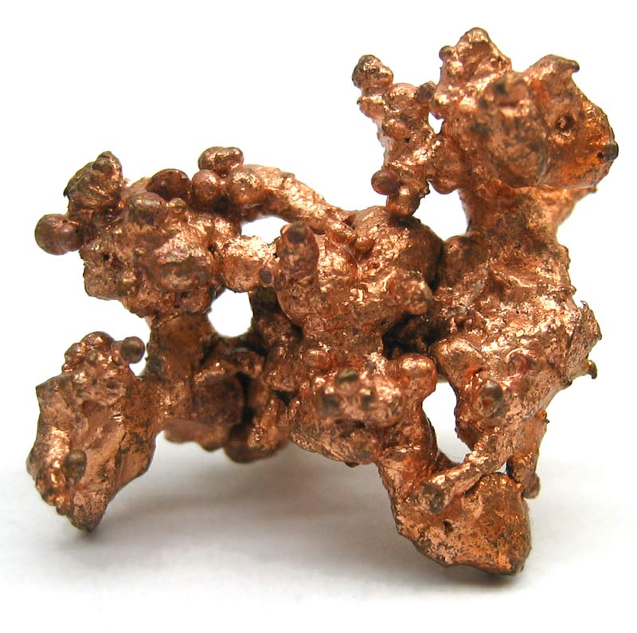
Металл, с античных времен используемый для чеканки монет и медалей. Из-за своей пластичности, ковкости и устойчивости к коррозии является самым распространенным монетным металлом, как в чистом виде, так и в составе сплавов - бронзы, латуни, медно-никелевых и т.п. Являлся основным металлом для изготовления мелкой разменной монеты в древности и средние века.
Никель (Ni)
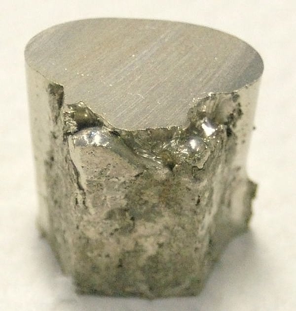
Впервые получен в 1751 году. Серебристый металл, очень стоек к воздействию воздуха и воды. Используется для чеканки разменных монет с 1850 года, обычно не в чистом виде, а в составе сплавов, обычно с медью. Так же применяется для нанесения внешнего защитного слоя на монеты, отчеканенные из других металлов (меди, бронзы и т.п.).
Алюминий (Al)
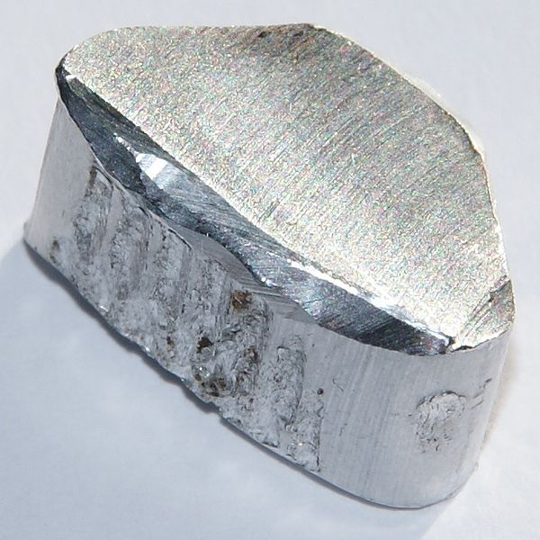
Впервые получен в чистом виде в 1824 году. Стойкий к коррозии металл белого цвета, используемый для монет малого достоинства. Используется для изготовления монет, обычно в сплаве с магнием. Алюминиевые монеты впервые появились в конце первой мировой войны. Часто используется в составе сплава алюминиевая бронза.
Железо (Fe)
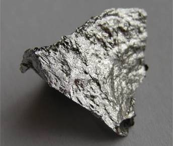
Первое упоминание о железе, как орудии мены относится к XVI веку до н. э., когда фараон Тутмес III получил дань из Аравии, Ассирии и Месопотамии очищенным железом и свинцом. Гомер упоминает о железе, как об обычном средстве мены. Железные монеты выпускались многими европейскими странами в периоды войн в этом столетии. Чтобы обойти коррозионную проблему в современных монетах, использовались различные покрытия - от меди до никеля и хрома. Причем многие "железные" монеты имеют сейчас стальную "начинку" (небольшая добавка углерода превращает железо в сталь).
Магний (Mg)
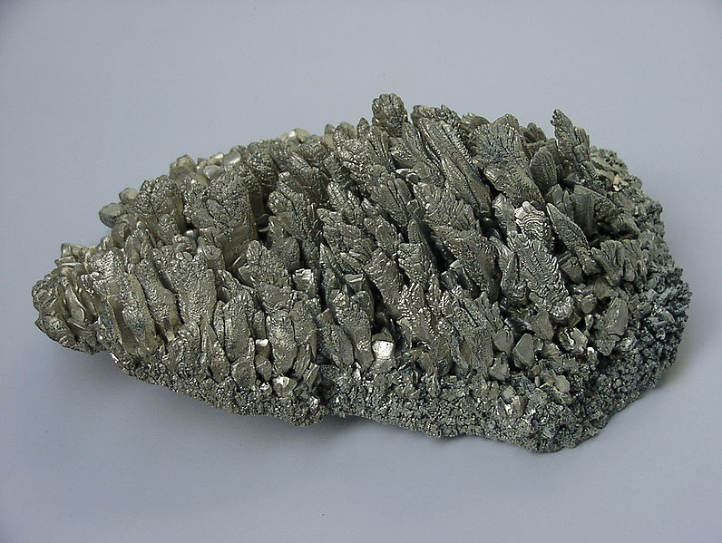
Впервые получен в 1755 году. Лёгкий, ковкий металл серебристо-белого цвета, на 40 % легче, чем алюминий. В чистом виде для чеканки монет не используется, добавляется в сплавы.
Марганец (Mn)
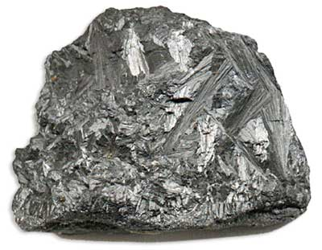
Серый металл, походящий на полированную сталь. Один из основных материалов марганца – пиролюзит – был известен в древности как черная магнезия и использовался при варке стекла для его осветления. Его считали разновидностью магнитного железняка. В 1774 году, путем нагревания в печке пиролюзита с углем, получили металлический марганец. В начале XIX века для него было принято название «манганум». Не используется как чистый металл в монетах или медалях, потому что реагирует с водой, но часто применяется в сплавах. Во время Второй Мировой войны 5-ти центовые монеты в США были сделаны из сплава 56% Cu, 35% Ag и 9 % Mn.
Олово (Sn)
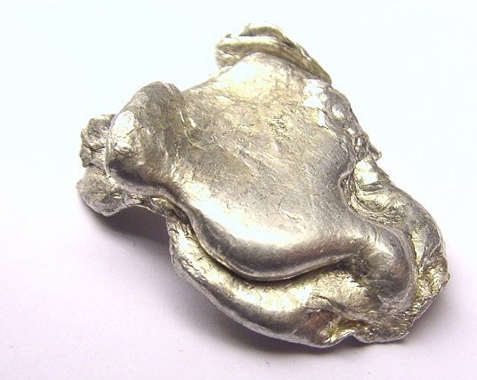
Похож на серебро по цвету, очень мягкий. Мягкость и низкая температура плавления делают этот металл в чистом виде не слишком пригодным для изготовления монет. Обычно олово используется в качестве составляющих сплавов, самым известным из которых является бронза, но имеется исторический опыт чеканки монет из почти чистого олова. Например, в Англии в 17 веке чеканились монеты достоинством фартинг и полпенни. В Таиланде в 1940-50х годах в олове выпускались некоторые номиналы местных сатангов.
Хром (Cr)
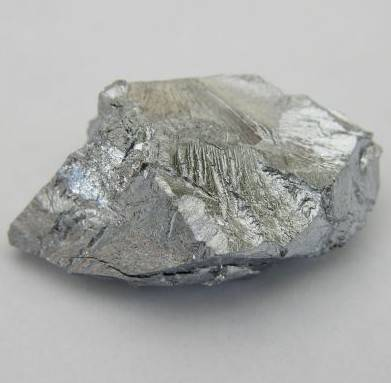
Название элемент получил от греч.  –
цвет, краска – из-за разнообразия окраски своих соединений. Впервые
получен в 1798 году. Твёрдый металл голубовато-белого цвета,
неподходящий для чеканки монет, но используемый для покрытия монет из
стали (увеличивает износоустойчивость).
–
цвет, краска – из-за разнообразия окраски своих соединений. Впервые
получен в 1798 году. Твёрдый металл голубовато-белого цвета,
неподходящий для чеканки монет, но используемый для покрытия монет из
стали (увеличивает износоустойчивость).
Цинк (Zn)
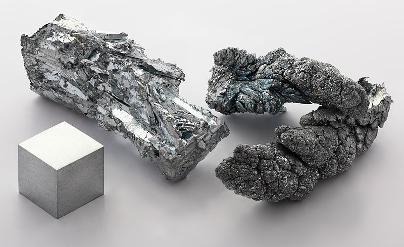
Впервые получен в 1746 году. Легкий, серебристый метал, на воздухе покрывающийся защитным слоем оксида. В чистом виде крайне редко используется для чеканки монет. Цинковые монеты чеканились во многих странах в период Второй мировой войны и в послевоенные годы. В настоящее время, как правило, цинк используется в монетных сплавах, в первую очередь в латуни.
Сплавы
Barton`s Metal – Фактически это медь, покрытая толстым слоем золота. Использовался в 1825 году в Англии, во время правления Георга IV.
Bath Metal – Тип дешевой бронзы, использовался в Ирландии, Америке и на Острове Мэн.
Акмонитал – Нержавеющая хромистая сталь с добавлением никеля (от итальянского acciaio monetario italiano – итальянская монетная сталь). Из этого сплава в основном чеканятся на Римском монетном дворе разменные монеты Италии, Ватикана и Сан-Марино.
Алюминиевая Бронза (Al-Br) – Медно-алюминиевые трудноизнашивающиеся сплавы желтого цвета, иногда содержащие небольшое количество марганца или никеля.
Аргентан – См. Никелевое серебро
Аурихалк – Сплав меди и цинка (80% Cu, 20% Zn). Вообще говоря, аурихалк — это римское название латуни. Для более подробной информации см. Латунь
Биллон – Сплав меди и серебра (большее половины — медь). Использовался во времена Римской империи, во Франции и Швейцарии.
Бронза – Сплавы меди с другими металлами — оловом, алюминием, бериллием, свинцом, кадмием, хромом. Соответственно, бронза может быть оловянной, алюминиевой, бериллиевой, свинцовой, кадмиевой и хромовой. Иначе говоря, бронза — это легированная медь. Обычно включает от 80% до 95% меди. Высокое содержание олова дает бронзе серебряный цвет. Бронзовые сплавы более стойкие и пригодные для чеканки монет, чем чистая медь. Наиболее современные "медные" монеты — это фактически бронза, поскольку чистая медь слишком мягка и быстро изнашивается.
Вирениум – Немецкий тип серебрянного сплава, содержащий никель, медь и цинк.
Колокольный металл – Тип бронзы, обычно используемой в изготовлении колоколов и колокольчиков, но также и использованный во Франции во времена Революции.
Коронное золото (Кроновое золото) – 2 карата лигатуры (примеси) и 22 карата золота. Коронное золото — стандарт, используемый в британском соверене.
Лигатура – Вспомогательный металл, применяемый с целью придания определённых свойств металлическому составу (повышенной механической прочности и др.) При изготовлении монет из благородных металлов в качестве лигатуры, например, часто используется медь.
Латунь – Сплав меди и цинка, хотя термин свободно используется, включая все медные сплавы. Часто добавляются алюминий, олово, железо, марганец, никель, кремний, свинец — в сумме до 10%. Вообще, используемые сплавы изменяются по составу цинка от 3% до 30% (изредка до 50%), и изменяются в цвете от медно-красного до ярко-желтого. Римское название латуни — аурихалк. Монеты из латуни известны с древнейших времен. Латунные монеты чеканились и в Древнем Риме и в Китае, причем китайские монеты из латуни были в основном литые. Латунь с небольшим количеством никеля известна как никелевая латунь. Она используется для чеканки современных монет во многих странах.
Медно-алюминевый сплав – Использовался при чеканке монет достоинством 1, 2, 3 и 5 копеек в СССР до 1961 года.
Медно-никелевый сплав – один из наиболее обычных сплавов, используемых в современных монетах. Используются для чеканки разменных монет с конца XIX века, причем их состав на разных монетных дворах весьма разнообразен. Одним из самых известных таких сплавов является мельхиор, однако в настоящее время для чеканки монет он не применяется. (см. также Мельхиор)
Медно-цинковый сплав – Использовался для чеканки монет 1,2, 3 и 5 копеек в СССР с 1961 по 1991 годы.
Мельхиор – Сплавы меди (основа) главным образом с никелем (5-30%), а также с марганцем (около 1%) и железом (около 1%). Мельхиор отличают высокая стойкость против коррозии на воздухе и в воде, а также хорошая обрабатываемость. В 19 веке к мельхиору относили сплавы медь-никель-цинк (нейзильберы) и посеребренную латунь, поэтому изделия из них иногда неправильно называли мельхиоровыми. (см. также Нейзильбер)
Нейзильбер – Сплав меди с 5-35% никеля и 13-45% цинка. Название от нем. Neusilber, букв. "новое серебро". Имеет красивый белый цвет с зеленоватым или синеватым отливом и высокую стойкость против коррозии. Поэтому его часто используют для изготовления юбилейных монет. (см. также Никелевое серебро)
Нержавеющая сталь – Сплав железа, хрома и никеля. В настоящее время используется во многих странах (в частности — в Украине) для производства мелких разменных монет.
Никелевая латунь – Медный сплав, содержащий цинк и небольшое количество никеля. Используется для чеканки современных монет во многих странах.
Никелевое серебро (Немецкое серебро) – Медный сплав, содержащий никель 18-22%, цинк 15-20% и иногда марганец и другие металлы. Сплав также известен как Аргентан. (см. также Аргентан, Нейзильбер)
Нордгельд – От англ. nord и geld (gold), букв. "северное золото". См. Нордик
Нордик – Специальный сплав из четырех металлов (CuAl5Zn5Sn1, разновидность алюминиевой бронзы), используемый для изготовления монет (в частности, из него были изготовлены новые монеты Евросоюза). На Украине использовался для производства биметаллических монет.
Пинчбек – Главным образом медь с некоторым добавлением цинка, использовался в 18-м столетии как дешевая имитация золота.
Потин – Древний сплав меди, цинка и олова. В отличие от биллона он обычно не содержит серебро, хотя некоторые сплавы, содержащие серебро также назвались потин. Использовался в Египте и южной Индии.
Пушечный металл – Сплав меди, олова и цинка, используемого для отливки орудий (88% Cu, 10% Sn, 2% Zn). Единственный исторический прецедент, когда он использовался для монет — это т.н. Пушечные Деньги, которые были отчеканены в 1689 году Джеймсом II для использования в Ирландии. (тогда были использованы старые орудия, колокола, и т.п.)
Пьютер – Первоначально сплав олова с приблизительно 15% свинца, и иногда антимония и меди. Монеты из него чеканились в Богемии и Франции.
Спекулум – Серебристый сплав олова и бронзы, использовавшийся в Галлии и Англии во времена вторжения Цезаря.
Сталь – Общее название железоуглеродистых сплавов. Сильно подвержена коррозии, поэтому требует покрытия из других металлов, когда используется для монет. Чаще всего используется нержавеющая сталь.
Томпак – Медный сплав. Использовался в Канаде для монет по 5 центов в 1942 и 1943 годах (88% Cu, 12% Zn).
Электр (электрон) – Это естественный сплав приблизительно 75% золота с 25% серебра и меди и другими металлами. Использовался для самых ранних монет, чеканившихся в древней Лидии и Греции.
По материалам сайта : http://coinzwhizz.com/